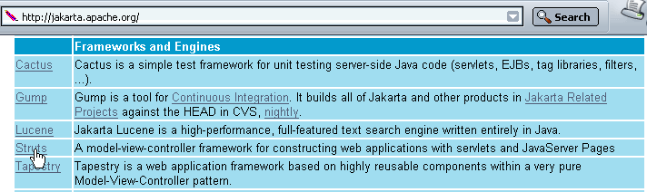
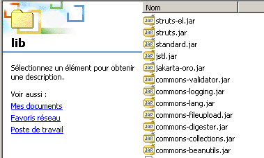

1. 一般信息
文档的PDF版本可在此处获取 |HERE|。
1.1. 目标
本文将探讨一个名为 Struts 的开发框架。Jakarta Struts 是 Apache 软件基金会（www.apache.org）的一个项目，旨在为基于 MVC（模型-视图-控制器）架构的 Java Web 应用程序开发提供标准框架。
1.2. MVC 模型
MVC 模型旨在将展示层、处理层和数据访问层进行分离。遵循该模型的 Web 应用程序将具有如下结构：
 |
这种架构被称为三层架构：
- 用户界面是 V（视图）
- 应用程序逻辑是 C（控制器）
- 数据源是 M（模型）
用户界面通常是网页浏览器，但也可能是通过网络向 Web 服务发送 HTTP 请求并格式化接收结果的独立应用程序。应用逻辑由处理用户请求的脚本组成。 数据源通常是数据库，但也可能是简单的平面文件、LDAP目录、远程Web服务等。保持这三个实体之间高度的独立性符合开发者的最佳利益，这样如果其中一个发生变化，另外两个就不必改变，或者只需进行最小的调整。
当将此模型应用于 Servlet 和 JSP 页面时，将形成以下架构：
 |
在 [应用逻辑] 模块中，我们区分
- Servlet（作为应用程序的入口点，也称为控制器）
- [业务类] 模块，其中包含应用程序逻辑所需的 Java 类
- [数据访问类] 模块，包含用于检索 Servlet 所需数据的 Java 类，通常是持久化数据（数据库、文件、Web 服务等）
- JSP 页面块，构成应用程序的视图。
1.3. 基于 Servlet 和 JSP 页面的 MVC 开发方法
我们已定义了一种遵循上述 MVC 模型的 Java Web 应用程序开发方法。我们将在此对其进行回顾。
- 我们将首先定义应用程序的所有视图。这些视图即呈现给用户的网页。因此，在设计视图时，我们将采用用户的视角。视图主要有三种类型：
- 输入表单，用于从用户处获取信息。该表单通常包含一个按钮，用于将输入的信息发送至服务器。
- 响应页面，仅用于向用户提供信息。该页面通常包含一个链接，允许用户在另一个页面上继续使用应用程序。
- 混合页面：Servlet 已向客户端发送了一个包含其生成的信息的页面。客户端将使用该页面向 Servlet 提供额外信息。
- 每个视图都会生成一个 JSP 页面。针对每种视图：
- 我们将设计页面的布局
- 我们将确定其中哪些部分是动态的：
- 供用户使用的信息，必须由Servlet作为参数传递给JSP视图
- 必须传输给 Servlet 进行处理的输入数据。该数据必须是 HTML 表单的一部分。
- 我们可以绘制每个视图的I/O流程图
 |
- 输入是指 Servlet 必须通过请求或会话提供给 JSP 页面的数据。
- 输出是指 JSP 页面必须提供给 Servlet 的数据。这些数据属于 HTML 表单的一部分，Servlet 将通过调用 request.getParameter(...) 等操作来获取它们。
- 我们将为每个视图编写 Java/JSP 代码。这些代码通常采用以下形式：
<%@ page ... %> // importations de classes le plus souvent
<%!
// variables d'instance de la page JSP (=globales)
// nécessaire que si la page JSP a des méthodes partageant des variables (rare)
...
%>
<%
// récupération des données envoyées par la servlet
// soit dans la requête (request) soit dans la session (session)
...
%>
<html>
...
// on cherchera ici à minimiser le code java
</html>
- 接下来我们可以进行初步测试。下面介绍的部署方法专用于 Tomcat 服务器：
- 必须在 Tomcat 的 server.xml 文件中创建应用上下文。我们可以先测试该上下文。设 C 为该上下文，DC 为与其关联的文件夹。我们将创建一个名为 test.html 的静态文件，并将其放置在 DC 文件夹中。启动 Tomcat 后，我们在浏览器中访问 URL http://localhost:8080/DC/test.html。
- 每个 JSP 页面均可进行测试。若某个 JSP 页面名为 formulaire.jsp，我们将在浏览器中请求 URL http://localhost:8080/DC/formulaire.jsp。该 JSP 页面期望从调用它的 Servlet 接收参数值。 在此，我们直接调用该页面，因此它不会收到预期的参数。为了确保仍能进行测试，我们将使用常量在 JSP 页面中手动初始化预期的参数。这些初步测试旨在验证 JSP 页面的语法是否正确。
- 接下来，我们编写 Servlet 代码。它包含两个不同的方法：
- init 方法，用于：
- 从 web.xml 文件中检索应用程序的配置参数
- 可能创建后续需要使用的业务类实例
- 处理任何初始化错误列表，并将这些错误返回给应用程序的后续用户。此错误处理甚至可能包括向应用程序管理员发送电子邮件，以通知其系统故障
- doGet 或 doPost 方法，具体取决于 Servlet 如何从客户端接收参数。如果 Servlet 处理多个表单，建议每个表单都发送能够唯一标识自身的信息。 这可以通过表单中类型为 <input type="hidden" name="action" value="..."> 的隐藏属性来实现。Servlet 可以先读取该参数的值，然后将请求的处理委托给负责处理此类请求的私有内部方法。
- 应尽可能避免在 Servlet 中放置业务逻辑，这并非其设计初衷。 Servlet 充当一种团队领导者（控制器）的角色，它接收来自客户端（Web 客户端）的请求，并将其交由最合适的实体（业务类）执行。编写 Servlet 时，您将定义待创建的业务类的接口（构造函数、方法）。这适用于需要创建这些业务类的情况。如果它们已经存在，则 Servlet 必须适配现有的接口。
- Servlet 代码将被编译。
- 我们将编写 Servlet 所需业务类的骨架。例如，如果 Servlet 使用类型为 proxyArticles 的对象，且该类必须包含一个返回字符串列表（ArrayList）的 getCodes 方法，那么我们最初可以简单地编写：
public ArrayList getCodes(){
String[] codes= {"code1","code2","code3"};
ArrayList aCodes=new ArrayList();
for(int i=0;i<codes.length;i++){
aCodes.add(codes[i]);
}
return aCodes;
}
- 现在我们可以开始测试该 Servlet 了。
- 必须创建应用程序的 web.xml 配置文件。该文件必须包含 Servlet 的 init 方法所需的所有信息（<init-param>）。此外，我们还需设置访问主 Servlet 的 URL（<servlet-mapping>）。
- 所有必要的类（Servlet、业务类）都放置在 WEB-INF/classes 目录下。
- 所有必要的类库（.jar）都放置在 WEB-INF/lib 目录下。这些类库可能包含业务类、JDBC 驱动程序等。
- JSP视图放置在应用程序根目录或专用文件夹中。其他资源（HTML、图片、音频、视频等）亦同。
- 完成上述配置后，需对应用程序进行测试并修正初始错误。本阶段结束时，应用程序架构即可投入运行。由于 Tomcat 本身不提供调试工具，此测试阶段可能较为棘手。为此，需要将 Tomcat 集成到开发工具中（如 JBuilder Developer、Sun One Studio 等）。 您可以使用 System.out.println("....") 语句，这些语句会输出到 Tomcat 控制台。首先需要检查的是 init 方法是否成功从 web.xml 文件中读取了所有数据。为此，我们可以将这些参数的值输出到 Tomcat 窗口中。同样地，我们将验证 doGet 和 doPost 方法是否正确地从应用程序的各个 HTML 表单中获取了参数。
编写 Servlet 所需的业务类。这通常涉及标准 Java 类的开发，这类类通常独立于任何 Web 应用程序。首先需在该环境之外进行测试，例如通过控制台应用程序。业务类编写完成后，可将其集成到 Web 应用程序的部署架构中，并测试其在该架构中的正确集成。此过程将针对每个业务类重复进行。
1.4. STRUTS 开发方法
STRUTS 方法论的创建者旨在为基于 Java 编写的 Web 应用程序定义一种遵循 MVC 架构的标准开发方法。STRUTS 项目包含两个方面：
- 开发方法。我们将看到，它与上述针对 Servlet 和 JSP 页面的开发方法非常相似
- 支持该开发方法的工具。这些工具是可在 Apache 基金会网站（www.apache.org）上获取的 Java 类库。
1.4.1. 开发方法
STRUTS 采用的 MVC 架构如下：
 |
- 控制器是应用程序的核心。所有客户端请求都需经过它。它是由 STRUTS 提供的一个通用 Servlet。在某些情况下，您可能需要对其进行扩展。对于简单的情况，则无需如此。这个通用 Servlet 通常从一个名为 struts-config.xml 的文件中获取所需的信息。
- 如果客户端请求包含表单参数，这些参数会被放入一个 Bean 对象中。如果一个类遵循我们稍后将讨论的构造规则，则该类被视为 Bean 类型。随时间创建的 Bean 对象存储在客户端的会话或请求中。此设置是可配置的。如果它们已经创建，则无需重新创建。
- 在 struts-config.html 配置文件中，程序需要处理的每个 URL（因此不对应于可直接请求的 JSP 视图）都与特定信息相关联：
- 负责处理该请求的 Action 类型类的名称。同样，实例化的 Action 对象也可存储在会话或请求中。
- 如果请求的 URL 包含参数（例如表单提交给控制器时），则需指定负责存储表单数据的 Bean 的名称。
- 凭借配置文件提供的这些信息，控制器在收到客户端的 URL 请求时，能够确定是否需要创建 Bean 以及具体创建哪个 Bean。一旦实例化，该 Bean 即可验证其存储的数据（源自表单）是否有效。 控制器会自动调用该 Bean 中的 `validate` 方法。该 Bean 由开发人员构建，因此开发人员将验证表单数据有效性的代码放置在 `validate` 方法中。如果发现数据无效，控制器将不再继续执行后续操作，而是将控制权传递给配置文件中指定的视图。至此，交互过程即告完成。 请注意，开发者可以选择不进行表单有效性检查。这同样在 struts-config.html 文件中配置。在这种情况下，控制器不会调用 Bean 的 validate 方法。
- 如果 Bean 的数据正确，或者未进行验证，或者不存在 Bean，控制器将控制权传递给与该 URL 关联的 Action 对象。它通过调用该对象的 execute 方法来实现这一点，并向其传递可能已构建的 Bean 的引用。这就是开发人员执行所需操作的地方：他们可能需要调用业务类或数据访问类。 处理结束时，Action对象将控制器应发送给客户端的视图名称返回给控制器。
- 控制器发送此响应。与客户端的交互至此完成。
STRUTS 开发方法论开始成形：
- 定义视图。我们将表单视图与其他视图区分开来。
- 每个表单视图都会在 struts-config.xml 文件中生成一个定义。该文件中定义了以下信息：
- 将包含表单数据的 Bean 类的名称，以及是否需要对数据进行验证的指示。如果需要验证且数据被判定为无效，则必须指定在此情况下要发回给客户端的视图。
- 负责处理表单的 Action 类的名称。
- 处理请求后可能发送给客户端的所有视图的名称。Action 类将根据处理结果从中选择一个。
- 每个视图对应一个 JSP 页面。我们将看到，在视图（特别是表单视图）中，我们有时会使用 Struts 专用的标签库。
- 每个表单视图都会在 struts-config.xml 文件中生成一个定义。该文件中定义了以下信息：
- 编写与表单视图对应的 JavaBean 类
- 编写负责处理表单的 Action 类
- 编写业务逻辑或数据访问类
1.4.2. STRUTS 开发工具
Struts 项目是 Apache 软件基金会旗下的项目之一。其中部分项目被归类在 Jakarta 项目组下，可通过网址 http://jakarta.apache.org 访问：

建议您阅读此页面。其中许多项目对 Java 开发者颇具参考价值。若点击上方的 Struts 链接，将跳转至该项目的主页：

同样，建议您阅读该主页。要下载 Struts Java 库，请点击上方的“二进制文件”链接：

Windows 用户请使用 1.1.zip 链接；Unix 用户请使用 1.1.tar.gz 链接（2003 年 11 月）。解压 1.1.zip 文件后，您将看到以下目录结构：

该目录结构包含 Struts 开发所需的 Java 类库。这些类库存储在 .jar 或 .war 文件中，其作用类似于 .zip 文件，可使用相同的工具进行解压。大部分必要的类库位于上方的 lib 文件夹中：

除了 .jar 类库外，还有 .dtd（文档类型定义）文件，其中包含 XML 文件的验证规则。XML 文件可以在其内容中引用此类 DTD 文件。分析 XML 文件内容的程序（称为解析器）将使用引用 DTD 文件中的验证规则来确定该 XML 文件在语法上是否正确。 例如，struts-config_1_1.dtd 文件定义了用于构建 Struts 1.1 版本 struts-config.xml 配置文件的规则。
现在，让我们看看在 Tomcat 服务器上部署 Struts 应用程序时，应将 Struts 目录结构中的各个元素放置在何处。
1.5. 部署 Struts 应用程序
Struts 应用程序与其他 Web 应用程序一样，因此遵循其运行容器的部署规则。在此，我们将一个名为 strutspersonne 的应用程序部署在 Tomcat 4.x 服务器上。Tomcat 5.x 的部署流程见附录。本文将遵循 Tomcat 4.x 的部署规则：
- 我们在 Tomcat 的 server.xml 配置文件中定义 strutspersonne 上下文：
完成上述操作后，如有必要，请重启 Tomcat 以使其生效。我们可以通过访问 URL http://localhost:8080/strutspersonne 来验证该上下文的有效性：

如果未显示错误页面，则表示上下文配置正确。
- 我们在与 strutspersonne 上下文关联的物理文件夹中创建 WEB-INF 子文件夹。
- 在应用程序的 WEB-INF 文件夹中，我们定义应用程序的 web.xml 配置文件：

<?xml version="1.0" encoding="ISO-8859-1"?>
<!DOCTYPE web-app
PUBLIC "-//Sun Microsystems, Inc.//DTD Web Application 2.3//EN"
"http://java.sun.com/dtd/web-app_2_3.dtd">
<web-app>
<servlet>
<servlet-name>action</servlet-name>
<servlet-class>org.apache.struts.action.ActionServlet</servlet-class>
<init-param>
<param-name>config</param-name>
<param-value>/WEB-INF/struts-config.xml</param-value>
</init-param>
</servlet>
<servlet-mapping>
<servlet-name>action</servlet-name>
<url-pattern>*.do</url-pattern>
</servlet-mapping>
</web-app>
- 该应用程序的控制器（Servlet）类是一个名为 ActionServlet 的预定义 Struts 类。它位于 struts.jar 文件中。为了确保 Tomcat 能找到该类，我们将 struts.jar 放置在 <tomcat>\common\lib 文件夹中，这是 Tomcat 搜索类时会检索的文件夹之一。 实际上，我们将把位于 <struts>\lib 文件夹中的所有 .jar 文件都放置在此处，其中 <struts> 是 Struts 目录树的根文件夹。

- 我们还将把位于 <struts>\contrib\struts-el\lib 目录下的 struts-el.jar 和 jstl.jar 文件也放置到该位置：

- 在此，我们可以访问 Web 服务器。但情况并非总是如此。如果您将 Web/Java 应用程序部署在非您自行管理的 Web 容器中，最好让应用程序包含其所需的所有库。这些库必须放置在 WEB-INF/lib 文件夹中，该文件夹需由您自行创建。
- 我们注意到控制器需要某些信息，这些信息通常位于与 web.xml 同一文件夹中的 struts-config.xml 文件中。实际上，该文件的名称是可以配置的。正是前面提到的 config 参数设置了这个名称。
- <servlet-mapping> 标签表明，所有以 .do 结尾的 URL 都将用于访问该控制器。此映射是 Struts 所必需的。随后，这些 URL 将由控制器进行过滤，控制器仅接受其 struts-config.xml 配置文件中声明的 URL
目前，我们的 web.xml 文件已足够使用。
- 我们将向 strutspersonne 应用程序请求 URL /main.do。根据前面的 web.xml 文件，该 URL 将被传递给 org.apache.struts.action servlet。ActionServlet 类将被实例化，并调用其 init 方法。该方法会尝试读取由 config 参数定义的配置文件。因此，该文件必须存在。我们创建以下 struts-config.xml 文件：
<?xml version="1.0" encoding="ISO-8859-1" ?>
<!DOCTYPE struts-config PUBLIC
"-//Apache Software Foundation//DTD Struts Configuration 1.1//EN"
"http://jakarta.apache.org/struts/dtds/struts-config_1_1.dtd">
<struts-config>
<action-mappings>
<action
path="/main"
parameter="/main.html"
type="org.apache.struts.actions.ForwardAction"
/>
</action-mappings>
</struts-config>
请注意，struts-config.xml 的 DTD 文件与 web.xml 的 DTD 文件不同，这表明它们的结构并不相同。对于控制器必须处理的每个 URL，我们需要定义一个 <action> 标签。该标签用于告知控制器在收到针对该 URL 的请求时应执行什么操作。在此，我们指定以下元素：
- path="/main"：定义由 <action> 标签配置的 URL 名称。后缀 .do 是隐含的。
- type="org.apache.struts.actions.ForwardAction"：定义必须处理该请求的 Action 类名称。此处我们使用 Struts 中预定义的 Action 类。该类本身不执行任何操作，而是将客户端的请求转发至 parameter 属性中指定的 URL。
- parameter="/main.html"：请求应转发到的 URL 名称。此处是一个静态 HTML 文件。
总而言之，当用户请求 URL /main.do 时，将被重定向至 URL /main.html。
- main.html 文件内容如下：
<html>
<head>
<title>Application strutspersonne</title>
</head>
<body>
Application strutspersonne active ....
</body>
</html>
该文件位于 strutspersonne/views 应用程序文件夹中：

可通过 URL http://localhost:8080/strutspersonne/main.html 直接访问：

在此情况下，应用程序的 Struts 控制器并未介入，因为它仅在请求 *.do 格式的 URL 时才会介入。然而，本次我们请求的是 URL /vues/main.html。
- 之前创建的 struts-config.xml 文件必须与 web.xml 文件放在同一个 WEB-INF 文件夹中：
- 现在，我们将通过访问 URL /main.do 来验证 strutspersonne 应用程序控制器是否运行正常（如有必要，请先重启 Tomcat）。

在此，由于我们请求了一个 *.do 格式的 URL，Struts 控制器介入了处理。我们成功获取了预期的页面（main.html）。现在，我们已经具备了应用程序运行所需的基本组件：strutspersonne 上下文、web.xml 和 struts-config.xml 配置文件，以及 Struts 库。
如果我们请求的是 /toto.do 这样的 URL，会发生什么情况？根据 strutspersonne 应用程序的 web.xml 文件，Struts 控制器会被调用以处理该请求。随后它会检查 struts-config.html 配置文件，并发现其中没有针对 URL /toto 的配置。那么它会怎么做呢？让我们试一试：

我们得到一个错误页面，这似乎很正常。现在我们可以开始编写应用程序了。